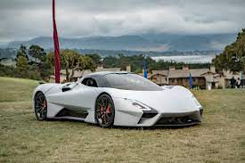

SSC Tuatara
W 2011 roku SSC rozpoczęło prace nad następcą supersamochodu Ultimate Aero TT, w tym samym roku na czerwcowym Pebble Beach Concours d’Elegance prezentując prototyp SSC Tuatara Concept. Po licznych zapowiedziach, w styczniu 2018 producent oficjalnie zapowiedział planowaną wówczas w ciągu najbliższych miesięcy prezentację seryjnego modelu.19 października 2020 roku producent samochodu ogłosił, że SCC Tuatara pobiła rekord prędkości stając się tym samym najszybszym samochodem produkcyjnym na świecie. Podczas próby uzyskała średnią prędkość przejazdu w obie strony 508,5 km/h (316,11 mil/h) i maksymalną prędkość 532,8 km/h (331,15 mil/h). Samochód był pilotowany przez brytyjskiego kierowcę wyścigowego Olivera Webba.
